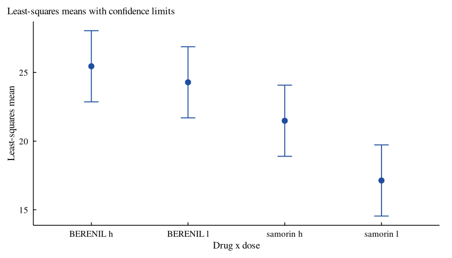

Research


Overview
VetResearchLMM gives the data sets and every analysis of Duchateau, Janssen and Rowlands (1998), Linear Mixed Models. An Introduction with Applications in Veterinary Research (ILRI, Nairobi), with its own engine for linear mixed models that gives the results the book prints from SAS PROC MIXED and PROC GLM.
-
vlm_fit(): REML, ML or Type 3 (moment) estimation; random variance components, random coefficients (vlm_random(), VC or UN) and residual structures (vlm_repeated(): CS, AR(1), SP(POW), UN); the fixed-effects solution in the overparameterised coding; Type 3 or Type 1 tests with containment, residual, between-within, Satterthwaite or Kenward-Roger degrees of freedom; fit statistics; -
vlm_lsmeans(),vlm_estimate(),vlm_contrast(): least-squares means with Tukey, Bonferroni or Sidak comparisons, estimates in the broad and narrow inference spaces, and F tests of contrasts; -
vlm_blup(): best linear unbiased predictions of random effects; -
vlm_ems(): the analysis of variance with expected mean squares and synthesised F tests; -
vlm_compare(): information criteria and likelihood ratio tests of covariance structures; -
vlm_interpret(),vlm_cite(),vlm_app(): plain-language interpretation, references and a shiny application in which every example of the book loads with one click.
The help pages ?Examp1.3.2 to ?Examp3.3 give the SAS program of each example with the same analysis in R. The package reproduces 115 of the 116 numbers of the book that it checks; the other one is printed truncated (3.685 for 3.6855). Version 2.0.0 keeps the data sets, the help topics and emmeans_mixed_model() and report_mixed_model() of version 1.1.0, adds the data sets of Examples 1.2.2, 1.2.3 and 1.2.6, and corrects three typing errors in ex33.
Installation
install.packages("VetResearchLMM")
# development version
# install.packages("remotes")
remotes::install_github("myaseen208/VetResearchLMM")Quick start
The split-plot experiment of Example 1.2.5 (drugs given to herds within regions, doses to animals within herds):
library(VetResearchLMM)
fm <-
vlm_fit(
fixed = Pcv ~ Drug + dose + Drug:dose
, data = ex125
, random = ~ Region + Region:Drug
, repeated = NULL
, method = c("REML", "ML", "Type3")
, ddfm = "satterth"
, type = 3
, class = NULL
, bound = TRUE
, control = list()
)
fmLinear mixed model: Pcv ~ Drug + dose + Drug:dose
Estimation: REML; denominator df: satterth; converged after 6 iterations
Random: Region; Region:Drug
Covariance parameter estimates
parameter subject estimate se z p
Region 5.151 3.739 1.378 0.0842
Region:Drug 0.3870 1.022 0.3788 0.3524
Residual 2.096 0.9375 2.236 0.0127
Fit statistics
statistic value
-2 Res Log Likelihood 92.3786
AIC (smaller is better) 98.3786
AICC (smaller is better) 99.8786
BIC (smaller is better) 101.366
Solution for fixed effects
effect level estimate se df t p
(Intercept) 17.13 1.128 8.208 15.19 < 1e-04
Drug BERENIL 7.150 0.9098 11.82 7.859 < 1e-04
Drug samorin 0 .
dose h 4.350 0.8359 10.00 5.204 0.000399
dose l 0 .
Drug:dose BERENIL h -3.183 1.182 10.00 -2.693 0.022594
Drug:dose BERENIL l 0 .
Drug:dose samorin h 0 .
Drug:dose samorin l 0 .
Type 3 tests of fixed effects
effect num_df den_df F p
Drug 1 5.000 64.58 0.000483
dose 1 10.00 21.78 0.000886
Drug:dose 1 10.00 7.251 0.022594
Sources: Duchateau, Janssen and Rowlands (1998); Patterson and Thompson (1971);
Gilmour, Thompson and Cullis (1995); Littell, Milliken, Stroup and Wolfinger
(1996); Satterthwaite (1946); Giesbrecht and Burns (1985); Fai and Cornelius
(1996). Full references: vlm_cite(x).
vlm_interpret(
x = fm
, alpha = 0.05
, top = 3L
)Linear mixed model
Pcv ~ Drug + dose + Drug:dose, fitted by REML with 3 covariance parameters.
Findings:
- Of the total variance 7.63, 67.5% is due to Region, 5.1% is due to
Region:Drug, 27.5% is due to the residual (within) variation.
- Significant at the 0.05 level: Drug (F = 64.6 on 1 and 5 df, p = 0.00048);
dose (F = 21.8 on 1 and 10 df, p = 0.00089); Drug:dose (F = 7.25 on 1 and
10 df, p = 0.023).
Recommendations:
- The interaction Drug:dose is significant: compare the levels of one factor
within each level of the other (vlm_lsmeans() of the interaction, or
vlm_estimate()) rather than main-effect means.
- Report means with standard errors in the broad inference space
(vlm_lsmeans()); use vlm_estimate() with `random` for the narrow space of
the observed levels.
Sources:
- Duchateau, L., Janssen, P. and Rowlands, G. J. (1998). Linear Mixed Models.
An Introduction with Applications in Veterinary Research. International
Livestock Research Institute, Nairobi. ISBN 92-9146-038-9.
- Patterson, H. D. and Thompson, R. (1971). Recovery of inter-block
information when block sizes are unequal. Biometrika, 58(3), 545-554.
doi:10.1093/biomet/58.3.545
- Gilmour, A. R., Thompson, R. and Cullis, B. R. (1995). Average information
REML: an efficient algorithm for variance parameter estimation in linear
mixed models. Biometrics, 51(4), 1440-1450. doi:10.2307/2533274
- Littell, R. C., Milliken, G. A., Stroup, W. W. and Wolfinger, R. D. (1996).
SAS System for Mixed Models. SAS Institute, Cary, NC.
- Satterthwaite, F. E. (1946). An approximate distribution of estimates of
variance components. Biometrics Bulletin, 2(6), 110-114.
doi:10.2307/3002019
- Giesbrecht, F. G. and Burns, J. C. (1985). Two-stage analysis based on a
mixed model: large-sample asymptotic theory and small-sample simulation
results. Biometrics, 41(2), 477-486. doi:10.2307/2530872
- Fai, A. H.-T. and Cornelius, P. L. (1996). Approximate F-tests of multiple
degree of freedom hypotheses in generalized least squares analyses of
unbalanced split-plot experiments. Journal of Statistical Computation and
Simulation, 54(4), 363-378. doi:10.1080/00949659608811740
lm1 <-
vlm_lsmeans(
fit = fm
, specs = ~ Drug:dose
, at = NULL
, diff = TRUE
, adjust = "tukey"
, level = 0.95
)
plot(x = lm1)
Learn more
- Vignettes:
browseVignettes("VetResearchLMM"), starting withVetResearchLMM_01_getting_started; PDF versions on the site. - Site: https://myaseen208.com/VetResearchLMM/
- Notation:
vlm_notation() - References of the methods behind a result:
vlm_cite()
Citation
Yaseen M, Duchateau L, Janssen P, Rowlands J (2026). _VetResearchLMM:
Linear Mixed Models: An Introduction with Applications in Veterinary
Research_. R package version 2.0.0,
<https://CRAN.R-project.org/package=VetResearchLMM>.BibTeX:
@Manual{VetResearchLMM,
title = {{VetResearchLMM}: Linear Mixed Models: An Introduction with Applications in Veterinary Research},
author = {Muhammad Yaseen and Luc Duchateau and Paul Janssen and John Rowlands},
year = {2026},
note = {R package version 2.0.0},
url = {https://CRAN.R-project.org/package=VetResearchLMM},
}Please also cite the book: citation("VetResearchLMM") lists it with the package, and vlm_cite(x) gives the references of a single result.